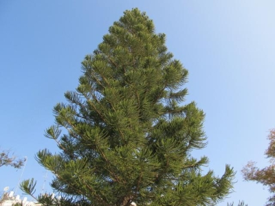

About Trees
The Vital Role of Trees in Our Ecosystem
Trees are among the most important living organisms on our planet. They play a crucial role in maintaining the balance of our ecosystems and providing numerous benefits to the environment and human society. Trees act as the planet’s lungs, absorbing carbon dioxide and releasing oxygen through the process of photosynthesis. This not only helps combat climate change but also provides the oxygen we need to breathe.
One of the most significant ecological benefits of trees is their ability to improve air quality. Trees filter harmful pollutants from the air, such as sulfur dioxide, ammonia, and nitrogen oxides. Their leaves and bark trap particulates, which can reduce smog formation and improve overall air quality, making urban areas healthier for residents.
Trees also play a vital role in water conservation and soil preservation. Their root systems help prevent soil erosion by anchoring the soil in place and increasing its ability to absorb water. This reduces runoff and the risk of flooding. Additionally, trees act as natural water filters, absorbing and purifying groundwater before it enters rivers, lakes, and streams.
The presence of trees contributes to the well-being of wildlife as well. They provide habitat and food for a diverse range of species, from birds and insects to mammals and fungi. The complex ecosystems that trees support are essential for biodiversity, which in turn supports human agriculture, medicine, and overall ecological health.
Furthermore, trees have profound social and economic impacts. Urban green spaces with trees can enhance the quality of life by providing areas for recreation and relaxation, reducing stress, and promoting physical activity. Property values tend to be higher in neighborhoods with mature trees, and businesses in green urban areas often experience increased patronage.
In conclusion, trees are indispensable to the health of our environment, our communities, and our planet. Protecting and planting trees is a critical step in ensuring a sustainable and healthy future for generations to come. By recognizing and acting on the importance of trees, we can contribute to a greener, more resilient world.
Types of Trees

Oak Tree
Oak trees are known for their strength and longevity. They produce acorns which are an important food source for wildlife.

Maple Tree
Maple trees are famous for their beautiful fall foliage and the sweet syrup produced from their sap.

Pine Tree
Pine trees are evergreen conifers that thrive in a variety of climates and provide habitats for many species.